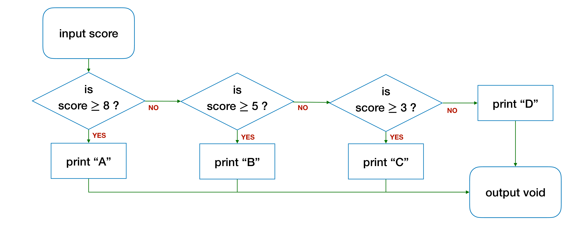

Unit 8: Conditional Statement
Learning Objectives
After going through this unit, students should:
- understand that branching in flowcharts relates to either
if-elsestatements or loops; - be able to identify the three components of an
if-elsestatement: the condition, thetrueblock, and thefalseblock; - be able to develop an
if-elsestatement in C, including, (i) nestedif-else, (ii)ifwithoutelseblocks, and (iii)else ifblocks; - be able to model a computational solution with different conditions as a table;
- understand the meaning and the use of the type
void - understand the term string and be able to use
cs1010_println_stringto print a string to the screen. - be aware that in CS1010:
- curly brackets must not be skipped even if a block contains only a single statement;
- nested conditional operators are banned.
- be aware of floating-point numbers must not be compared using equality.
Branching
So far the C programs that we have written have a straightforward execution path. The execution flows from top to bottom in the main function, jumping to a function being called (or callee), and back to the caller when the function returns.
We have, however, seen a few examples so far where the execution path can branch off to either one of two paths, depending on a condition:
- In the algorithm to compute the \(max(L, k)\), we check if \(i\) equals \(k\), and stop checking if it is true; repeat if it is false.
- In the algorithm to compute the \(max(L, k)\), we check if \(l_i > m\), and update \(m\) only if this is true.
- In the algorithm to compute the \(factorial(n)\), we check if \(n\) equals 0, and return 1 if it is true, otherwise, we return \(n \times factorial(n-1)\).
The first example above concerns repeating a step. We will look into this in Unit 11. For now, we will look at the other two examples first.
Let's use the \(factorial(n)\) function as an example.
In C, the \(factorial(n)\) would look like this:
| Calculating Factorial (v1) | |
|---|---|
1 2 3 4 5 6 7 8 9 10 | |
In this example, you see two new C keywords if and else. These keywords are used to create conditional blocks. The general syntax is:
| Syntax for if-else Statements | |
|---|---|
1 2 3 4 5 | |
The keyword if is followed by a logical expression in parentheses. This is followed by a block of statements (in curly braces { and }). If the logical expression is true, then the statements are executed. Otherwise, they are skipped and the statements following the else block are executed instead. For this reason, the group of statements following if is known as a true block, and the group of statements following else is known as the false block.
Comparison Operator
The logical expression n == 0 is true if the variable n holds the value of 0.
== vs =
Note that the use of TWO = signs. This is often confused by newbie programmers with a single = sign, which is used for assignment. A common bug is writing
1 2 3 | |
The == is known as a comparison operator. It compares if the expression on the left-hand side has the same value as the expression on the right-hand side. Other comparison operators include > (greater than), < (less than), >= (greater or equal to), <= (less than or equal to), and != (not equal).
In other words, the variable answer will be set to 1 if the parameter n equals 0.
What if n is not 0? The block that contains Line 5 answer = 1; will be skipped, and Line 7 answer = n * factorial(n - 1); will be executed instead.
Nested Else-If
The example above considers two possible execution paths only. In some situations, we may need to consider more than two execution paths. Take the following problem for example. We are given the numerical score for an assignment, ranging between 0 and 10. We want to print out the letter grade of the assignment according to the table below:
| Score | Letter Grade |
|---|---|
| 8 or higher | A |
| Less than 8 but 5 or higher | B |
| Less than 5 but 3 or higher | C |
| Less than 3 | D |
Summary Table
Building a table that summarizes the different possibilities is a useful tool when planning your solution to solve a computational problem.
Since the if-else statement only allows branching into two possibilities, we can branch into multiple possibilities by nesting the if-else statements hierarchically. We can first break the table down into three tables, each containing only two rows, with one row a negation of the other row.
Table 1 (A Grade)
| Score | Letter Grade |
|---|---|
| 8 or higher | A |
| Less than 8 | See Table 1 |
Table 2 (B Grade)
| Score | Letter Grade |
|---|---|
| Less than 8 but 5 or higher | B |
| Less than 5 | See Table 2 |
Table 3 (C or D Grade)
| Score | Letter Grade |
|---|---|
| Less than 5 but 3 or higher | C |
| Less than 3 | D |
The tables above can be translated into a flowchart below:

which can then be written into the following function with three nested if-else blocks:
| Function to Print The Letter Grade Given The Score (v1) | |
|---|---|
1 2 3 4 5 6 7 8 9 10 11 12 13 14 15 16 17 18 | |
voidis a special keyword in C that indicates a "nothing" type.- We use a pair of double quotes
"to mark the beginning and the end of text strings in C.
There are also a couple of "first" in the sample code above:
- You see the keyword
voidfor the first time.voidis a special type that indicates nothing. The functionprint_scoredoes not return anything, it accepts an inputscoreand prints something to the screen. As such, we say that the return type ofprint_scoreisvoid. A function whose return type isvoiddoes not need to have areturnstatement. - You see strings for the first time (
"A", etc.). A string is a sequence of characters. We use double quotes"to mark the beginning and the end of a string and use the CS1010 I/O library functioncs1010_println_stringto print a string to the screen. We won't cover how to declare a string variable or manipulate a string yet, until after the mid-semester break. For now, we will use strings in the context of printing output messages to the users.
You can imagine that as the number of possible letter grades increases (NUS has 11), we will have many nested if-else, and the code gets complicated. To reduce the number of nesting, we can write else if directly, without nesting:
| Using else-if for Multiple Branches (v2) | |
|---|---|
1 2 3 4 5 6 7 8 9 10 11 12 | |
The above code is easier to read but has the same flow as the one with nested if-else earlier.
Skipping else
In some algorithms, we don't need to have an else block.
For instance, suppose we have a variable m, and we wish to compare it with another variable x. We set m to x if x is the larger of the two, but we do not need to do anything otherwise. Regardless of whether m or x is larger, we will print out m after the comparison.
We could write it as:
| Code with Empty False Block | |
|---|---|
1 2 3 4 5 6 7 8 | |
The false block is empty, and we could keep our code succinct by removing it altogether.
| Skipping Else | |
|---|---|
1 2 3 4 5 6 | |
One, however, needs to be careful with skipping the else block.
Let's consider another example. Suppose we have three long variables, x, y, and max, and we want to set max to the maximum of x and y.
Consider the following code snippet:
| Bad Code Example: Skipping Else | |
|---|---|
1 2 3 4 5 6 | |
Take a moment to understand the code above, and see if you can figure out what is wrong.
When we think about writing conditionals, we have to exhaustively reason about what are all the possible scenarios that could occur. In this example, we need to think about what are the possible relationships between x and y when we compare x and y. There are three possibilities:
x > y:xis larger, and we setmaxtoxy > x:yis larger, and we setmaxtoyx == y: both are equally large, so the maximum can be eitherxory.
In the code above, max is not updated if x == y!
The following code adds the third case and arbitrarily chooses to set max to y if both x and y have the same value.
| Setting max to the Larger of x and y | |
|---|---|
1 2 3 4 5 6 7 8 9 | |
The code snippet above now correctly sets max to the maximum of x and y. The code, however, is inefficient since it redundantly compares x and y three times. Regardless of whether x or y is larger, the conditions x > y, x < y, and x == y are always evaluated. See the flowchart below.
To get around this redundant comparison, let's try to simplify the code. First, since the "true block" for x < y and x == y are the same, we can combine it into a single comparison x <= y.
| Setting max to the Larger of x and y (Simplified) | |
|---|---|
1 2 3 4 5 6 | |
But, if x > y is false, then x <= y must be true! We say that x > y and x <= y are negation (or opposite) of each other. So, the check for x <= y is redundant -- checking x > y is enough to tell us if x <= y. We can re-write the code above succinctly as:
| Setting max to the Larger of x and y (Simplified) | |
|---|---|
1 2 3 4 5 | |
So, we should not skip the else block in the case above, to begin with.
There are, however, other cases where the else block can be skipped. Consider the code:
| Calculating Factorial (v1) | |
|---|---|
1 2 3 4 5 6 7 8 9 10 | |
Since we do not modify or use the variable answer in a meaningful way except as a placeholder to be returned later, we could remove this variable to simplify our code. We could write the function more succinctly as:
| Calculating Factorial (v2) | |
|---|---|
1 2 3 4 5 6 7 8 | |
Now that we removed the variable answer, we could go one step further, and remove the else.
| Calculating Factorial (v3) | |
|---|---|
1 2 3 4 5 6 7 | |
We can always do this without changing the outcome of the function since Line 6 will be executed only if the condition of Line 3 is false. If the condition on Line 3 is true, the function will return and Line 6 will be skipped!
In CS1010, we follow this rule: we do not write an else after a return statement, since it is redundant.
Conditional Operator
Another way to express a conditional statement in C is to use the ternary conditional operator, which consists of two special characters ? and :. We use this operator in the format of:
1 | |
If the condition evaluates to true, then the true expression will be evaluated and returned, otherwise, the false expression will be evaluated and returned.
The conditional operator allows us to replace
1 2 3 4 5 | |
with a single line:
| Using Conditional Operator | |
|---|---|
1 | |
We can nest the conditional operator as well, but it does not necessarily make your code easier to read once you start nesting them up. For example,
1 | |
Nesting of conditional operators is therefore not allowed in CS1010.
In some cases, even without nesting, the conditional operator does not make the code easier to understand. Take the factorial function, for instance,
| Calculating Factorial (v4) | |
|---|---|
1 2 3 4 | |
So, CS1010 advises you to use the ? : operator sparingly and only when you know what you are doing.
Common Pitfalls with Conditional Statements
Comparing Real Numbers
Recall that we said real numbers cannot be represented exactly in computers. Comparing real numbers, therefore, becomes a little trickier in programming. The if statement
1 2 3 4 5 | |
would not be evaluated as true as expected!
Thus, to compare real numbers, we normally allow some errors in comparisons -- we want the absolute difference between sum and expected_value to be small enough.
1 2 3 4 5 | |
Indentation
We use indentation to indicate the nesting of blocks below:
| Function to Print the Letter Grade Given the Score (v1) | |
|---|---|
1 2 3 4 5 6 7 8 9 10 11 12 13 14 15 16 17 18 | |
Using indentation to denote the nesting of blocks is not required by C's syntax (unlike languages such as Python), but it is a widely accepted, good, programming practice, and is required for CS1010.
The code below compiles perfectly but is not as easy to read by a human as the above.
| Bad Code Example: Bad Indentation | |
|---|---|
1 2 3 4 5 6 7 8 9 10 11 12 | |
Curly Braces
The C standard says that, if the block contains only one statement, we can skip the curly braces { and }. In the example above, we can write:
| Bad Code Example: Skipping Braces | |
|---|---|
1 2 3 4 5 6 7 8 9 10 11 | |
Despite being allowed by the C standard, this is considered a bad practice and should be avoided. Imagine some time later, you go back to this code, and want to write something extra:
| Bad Code Example: Skipping Braces | |
|---|---|
1 2 3 4 5 6 7 8 9 10 11 12 | |
What would be printed?
The famous Apple goto fail bug wouldn't have happened in the there is a pair of curly braces added!
Alternatively, if you have code like this:
| Bad Code Example: Skipping Braces | |
|---|---|
1 2 3 4 5 | |
It might look like you can do better! will be printed if the score is less than 8, but actually, you can do better! will be printed if the score is larger or equal to 8 and there is no late penalty, which is not what is intended.
Redundant Comparisons
CS1010 insists that students should not make redundant conditional statements when writing if-else statements. A condition is redundant if it is always true or always false.
Take the example below:
| Redundant Comparison of x <= y | |
|---|---|
1 2 3 4 5 6 | |
Here, we compare both x > y and x <= y, but since the conditions are the negation of each other, if one is true then the other must be false. We only need to make one comparison between x and y.
Another example is the version of print_score below:
| Bad Code Example: Redundant Comparisons of score | |
|---|---|
1 2 3 4 5 6 7 8 9 10 11 12 13 14 15 16 17 18 | |
The conditions score < 8, score < 5, and score < 3 are always true and are therefore redundant.
Problem Sets
Problem 8.1
Draw the flowcharts for the two code snippets below. Identify redundant comparisons (if any), in each of the snippets.
(a)
1 2 3 4 5 6 7 | |
(b)
1 2 3 4 5 | |
Problem 8.2
Suppose we break down the table below in a slightly different way.
| Score | Letter Grade |
|---|---|
| 8 or higher | A |
| Less than 8 but 5 or higher | B |
| Less than 5 but 3 or higher | C |
| Less than 3 | D |
We rewrite the tables into three smaller tables, as follows:
| Score | Letter Grade |
|---|---|
| 5 or higher | See Table X |
| Less than 5 | See Table Y |
where Table X (5 or higher) is
| Score | Letter Grade |
|---|---|
| 8 or higher | A |
| Less than 8 | B |
and Table Y (less than 5) is
| Score | Letter Grade |
|---|---|
| 3 or higher | C |
| Less than 3 | D |
Write the corresponding if-else statements to print out the letter grade based on the tables above. Draw the corresponding flowchart.